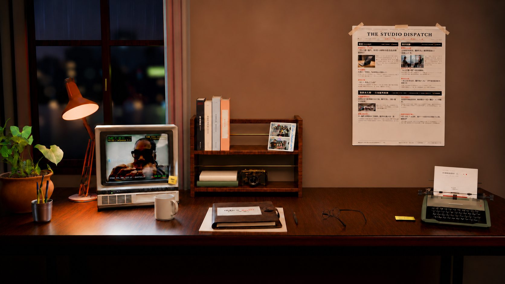

LU STUDIO // ROOM 01
INTERACTIVE ARCHIVE STUDIO · 复古互动工作室
卢倩莹 Lulu
营销 × 运营 × 记者
我做海外 KOL 运营与内容策划，也做过记者。向下依次探索工作室里的五件器物，点击即可进入对应档案与互动体验。

INTERACTIVE ARCHIVE STUDIO · 复古互动工作室
营销 × 运营 × 记者
我做海外 KOL 运营与内容策划，也做过记者。向下依次探索工作室里的五件器物，点击即可进入对应档案与互动体验。